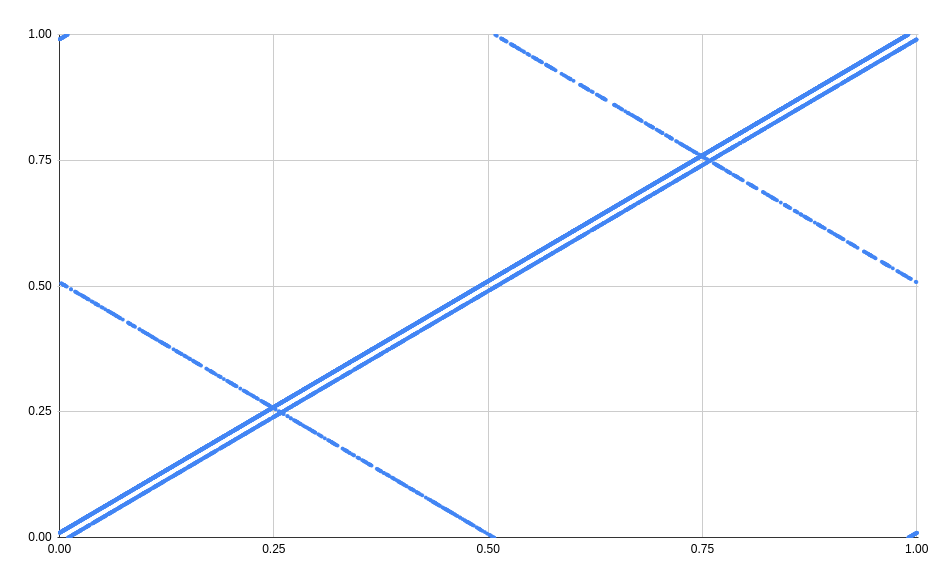
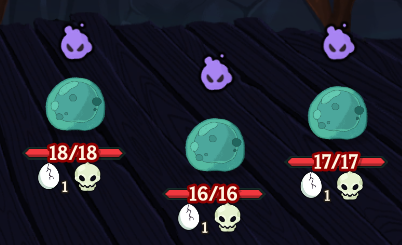
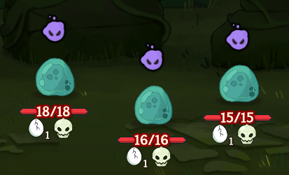

Correlated randomness in Slay the Spire 2
2026-06-13Here are three true statements about the game of Slay the Spire 2 (in single player):
-
If you pick Neow's Bones in the Underdocks, the random curse is ~54% likely to be Debt.*
-
It is impossible to receive Rebound from the Trash Heap event.
-
Your first fight is 76% likely to drop a potion in Underdocks, and 4% likely to drop a potion in Overgrowth.**
(* assuming neither of the relics from Neow's Bones is New Leaf or Kaleidoscope)
(** assuming your Neow relic doesn't give cards or other relics)
(*** all on the current beta patch, v0.107.0)
What?!
Why? The culprit is unexpected correlation between different random number generators -- knowing the first output of one of the game's RNGs gives information that helps predict the first output of all of the others.
The random number generators of Slay the Spire 2
For now, I will give an extremely simplified explanation of this correlation. If you want more details, I will go into much greater depth at the end of this post. If you don't care, you can skip this section to see all the funny examples below.
The phenomenon of "correlated RNG" (or "CRNG") is already known in the Slay the Spire community, because Slay the Spire 1 had a similar issue, described in detail in Forgotten Arbiter's blog post.[1]
Briefly, in Spire 1, the game used several distinct pseudorandom number generators, to prevent e.g. randomness within a combat from influencing future card rewards. However, they were all initialized to the same starting state, which meant they produced the same sequence of numbers. A crafty player could therefore pay attention to the results of past random events and gain information about future random events.
In an attempt to avoid the same problem, Spire 2 initializes its pseudorandom number generators to different states. The code looks something like this (highly simplified for didactic purposes):
Rng UpFront = new Rng(seed + hash("up_front"));
Rng Shuffle = new Rng(seed + hash("shuffle"));
Rng UnknownMapPoint = new Rng(seed + hash("unknown_map_point"));
Rng CombatCardGeneration = new Rng(seed + hash("combat_card_generation"));
Rng CombatPotionGeneration = new Rng(seed + hash("combat_potion_generation"));
Rng CombatCardSelection = new Rng(seed + hash("combat_card_selection"));
Rng CombatEnergyCosts = new Rng(seed + hash("combat_energy_costs"));
Rng CombatTargets = new Rng(seed + hash("combat_targets"));
Rng MonsterAi = new Rng(seed + hash("monster_ai"));
Rng Niche = new Rng(seed + hash("niche"));
Rng CombatOrbGeneration = new Rng(seed + hash("combat_orbs"));
Rng TreasureRoomRelics = new Rng(seed + hash("treasure_room_relics"));
// ...
There are many more random number generators in the game that I have not listed for brevity; notably, every event has its own RNG.
The hash function essentially produces a "random-looking" number
from the input string,
but the number is always the same for the same input.
So the idea is that the RNG states are shuffled around,
but the same seed still always results in the same run.
The problem comes when these seeds are passed
to the stock System.Random class in C#.
Unfortunately,
the pseudorandom number generation algorithm
used in C#
is almost entirely "linear" in the starting seed.
What this means exactly is a bit complicated -- again, I will go into greater detail later in this post. But the consequence is that two RNGs whose seeds differ by a known fixed amount have their outputs differ by a fuzzier but still-exploitable amount.
How exploitable, you might ask? Well...
Here is a big pile of consequences of CRNG, ranging from amusing-but-unimportant to legitimately impactful on gameplay (some of them even to casual players unaware of it!).
Neow's Bones
I'll start with the first example from the intro. If you pick Neow's Bones in Underdocks, the "random" curse you receive actually has the following approximate distribution:
However, in Overgrowth, you instead get a curse from this distribution:
This one is quite funny to me -- people all over Reddit and Discord have been lamenting their terrible luck that they keep rolling Debt from Neow's Bones.[2] Even before discovering CRNG, I saw some of these posts insisting it seemed more frequent than random. It is hard to express how instantaneously my brain automatically dismissed them as textbook confirmation bias. And yet...
To understand this one, we need to correlate three sources of randomness:
-
The "curse relic" available from Neow comes from a call to Neow's event-specific RNG, which is seeded with
seed + 1 + hash("NEOW").The Neow options always have exactly one relic from the "curse pool", as described on the wiki. The choice of which of the 8 curse relics to offer is the first call to Neow's RNG.
-
The random curse from Neow's Bones comes from a call to
RunState.Rng.Niche, which is seeded withseed + hash("niche").Since New Leaf and Kaleidoscope also call
Nichefor their randomness, rolling either of these relics from Neow's Bones will destroy the correlation. But otherwise, this will be the first call toNiche. -
The Act 1 variant (Underdocks or Overgrowth) comes from a call to an unnamed RNG created in
StartRunLobby#BeginRunLocally, which is seeded with the base seed.
Since Neow's Bones comes from Neow's "curse pool",
you will only ever see it when the first call to the Neow RNG
rolls in a particular range,
which imposes a strong constraint on the possible range for the first call to Niche
(stronger when combined with which Act 1 you are in).
It is clear that this correlation is very impactful on gameplay, even for players unaware of it. It makes Neow's Bones a much worse relic, giving less harmful curses like Clumsy, Guilty, and Injury extremely rarely and more crippling ones like Debt much more often.
At this point, you might be thinking "wait, doesn't that mean we can predict the randomness of every Neow relic?" Indeed we can! Let's do some more of them.
Large Capsule
The first relic from Large Capsule is never common.
What a buff!
More specifically, in Overgrowth, it's about 70% to be uncommon and 30% to be rare. In Underdocks, it's about 37% to be uncommon and 63% to be rare -- but there's a caveat:
Large Capsule will only appear about 1.65% of the time in an Underdocks act, because everything is correlated with everything. (Nobody seems to have noticed this one; here was someone's very funny reaction to this information as I was first investigating all of this.)
Here is the specific distribution of the "curse pool" option at Neow in Underdocks:
And in Overgrowth:
Getting back to Large Capsule in particular, much like Neow's Bones, the correlation has a legitimate gameplay impact. The relic is better than it "should be" on average.
What about Small Capsule?
Small Capsule
Since Small Capsule is not a curse pool relic, it does not have an intrinsic bias the way Neow's Bones and Large Capsule do.
However, this means we can use the presence of another curse pool relic to predict the rarity of the Small Capsule relic:
(Here, [U] means Underdocks and [O] means Overgrowth. Large Capsule is never present because there is a hardcoded restriction that both Capsules can't appear simultaneously.)
I've kept the scaling on the bars the same as the two charts in the previous section -- the total width of each row is proportional to how often that curse pool relic actually appears in the act. This is to demonstrate a concise heuristic: Small Capsule will usually give a common relic in Underdocks, and usually give an uncommon or rare relic in Overgrowth.
Okay, there's a lot more Neows with randomness, so I'll sort of speed through a few more and then get to some different stuff.
Leafy Poultice and Hefty Tablet
(These are "transform 2" and "choose a rare".)
Since these are both curse pool relics, they have an intrinsic bias. But they both generate multiple cards, so we can only predict the first one.
It turns out that the first transform from Leafy Poultice only has 22 possibilities (out of each character's 80-card pool), with some significantly more likely than others.
(These charts are pretty big, so I've hidden them away here. You can click through each character to see the available options, and have fun deciding which act is better.)
Leafy Poultice
Underdocks:
Overgrowth:
Similarly, the first option from Hefty Tablet only has 11 possibilities in Overgrowth, and 3 possibilities in Underdocks! This is because as shown above, Hefty Tablet only appears in about 1.3% of Underdocks in the first place, so seeing it is very strong information.
Underdocks:
Overgrowth:
New Leaf and Arcane Scroll
(These are "transform 1" and "random rare".)
As with Small Capsule, both the act and the curse pool option influence these relics.
Including a full card list for all 14 combinations of act and curse pool relic would take way too much space, so I'll just say: you can narrow the possible transforms from New Leaf down to anywhere from 4 to 39 options (out of 80), and the possible cards from Arcane Scroll down to anywhere from 3 to 12 options (out of 25), depending on your act and Neow.
Here's one fun tidbit, though: if you see Precarious Shears on Overgrowth (which is quite rare), then New Leaf is ~70% likely to give your character's alphabetically first card, and Arcane Scroll is ~65% likely to give your character's alphabetically first rare card.
Okay, but let's be real, at this point most of this isn't actually going to change the way you play. How about something else that does?
Lightning orbs and random targeting
The Underdocks easy pool has two multi-enemy fights: the Corpse Slugs and the Toadpoles. If you are the Defect, you might want to know where your first lightning orb will hit, especially if you drew Dualcast turn 1.
In the first fight of Underdocks specifically, your first orb is 75% to hit the enemy on the left. (This applies to the evoke if you play Dualcast, or the passive if you don't.) If you remember what curse pool you saw, you can do better:
You can do even better in the Corpse Slugs fight, which has a randomized starting attack pattern. I'm not going to list the whole table here, but for example: if you saw Precarious Shears and the Corpse Slug on the right is debuffing, then your orb is actually >95% to hit the one on the right.
(By the way, floor 2 Corpse Slugs will both be attacking on turn 1 less than 3% of the time. How nice of them!)
This applies to the first random combat target of the entire run -- for example, you might predict your first Countdown proc on Necrobinder, or your first Parrying Shield proc on anyone.
Speaking of early Act 1, let's finally get to the two other examples from the intro.
Trash Heap
Since the Trash Heap is Underdocks-exclusive, it is intrinsically biased. Here is the output of the Trash Heap RNG conditioned on the act RNG rolling Underdocks:
As you can see, it is literally impossible to obtain the card Rebound in a single player game.[3]
In case you care about predicting the relic, the pairs of consecutive cards correspond to Darkstone Periapt, Dream Catcher, Hand Drill, Maw Bank, and The Boot respectively (e.g. if the card is Entrench or Hello World, the relic is Hand Drill).
In case you want to predict the Trash Heap more precisely, here is the output further conditioned on the curse pool relic you saw (bars are hoverable):[4]
Incidentally, after finding this one, I searched for discussion about it on the internet, and indeed people have noticed they can't seem to complete their Compendiums. But I also discovered that user @hoge posted a spot-on description of the issue on Discord about a month ago. Props to them!
Potion drops and question mark combats
Finally, here is the third point mentioned in the intro -- how often does your first fight drop a potion? You know the drill by now:
Again, recall that Tablet and Capsule are extremely rare in Underdocks, and Shears and Tress are extremely rare in Overgrowth. Accounting for this, overall, the chance that your first fight drops a potion is 76% in Underdocks and just 4% in Overgrowth!
However, note that picking any Neow that generates a card reward or random relic breaks this correlation, since it steals the first call to rewards RNG. So Lost Coffer might look more appealing than average on bad Overgrowth maps.
As a bonus, the chance that the first ? room is a combat is also quite unevenly distributed:
(It mostly evens out by act, at ~9.6% in Underdocks and ~10.4% in Overgrowth.)
So far, everything here has only applied to Act 1. But -- you guessed it -- we can go further...
Doll Room
The Doll Room is an event that appears in Act 2. But as with most events, it uses its own RNG, so we can correlate it with the first call to every other RNG.
By this point in the game, you have seen a very large number of first-RNG-calls, and it's probably possible to predict the Doll Room with very high accuracy. But even just the Neow options are pretty good:
This shows which doll you will get if you click the "one doll" option. The "two dolls" option can be determined from the "one doll" option as follows:
| 1 doll | 2 dolls | |
| Daughter | → | Daughter + Struggles |
| Struggles | → | Struggles + BingBong |
| BingBong | → | BingBong + Daughter |
So if you rolled Hefty Tablet and want to guarantee Mr. Struggles, or if you rolled Precarious Shears or Silken Tress and want to guarantee Bing Bong, you only need to pay 5HP, and it will always be one of the options.
You might notice that the doll distribution looks pretty similar to the Underdocks/Overgrowth distribution. And in fact, there's a simpler "rule": in Underdocks runs, the "one doll" button is ~62% to be Bing Bong and ~4% to be Daughter, and vice versa for Overgrowth.
Divination
The Crystal Sphere also only appears in Act 2 or 3.
Again, it uses its own RNG, but this time the first interesting RNG call is the second one, which determines where to place the relic box.[5]
What's the easiest second roll to correlate with? There are some that are very high-signal (e.g. the top left card in the first shop), but it's kind of obnoxious to track because it depends on which rarity was rolled first.
It turns out that the amount of gold your first combat drops is the second roll of the "rewards" RNG (the first is whether you get a potion, as seen above).
So here's a little widget where you can see the distribution conditioned on gold number, assuming Ascension 3+:
But okay, this opens up a whole new world of possibilities. What else can we do by correlating 2nd rolls?
Ancient rewards
Being able to predict Ancients
would be extremely powerful.
But unfortunately
(or fortunately, depending on your perspective?),
combats, elites, bosses, and Ancients
are all rolled by RunState.Rng.UpFront,
which first rolls about 100 times to shuffle the relic lists.
What you can do is predict what Ancient options you will get if that Ancient shows up. For example, here's Pael's option 2 based on first combat gold:
While this information is surprisingly strong, it's not immediately clear how useful it is, because you don't know whether the Act 2 Ancient will be Pael in the first place. But I suppose it means if you roll 11 gold, you should immediately give up on your Clone dreams. (Or maybe I'm dreaming too small, and 13 gold means the Perfected Strike immediately gets in the deck...)
You can do the same for Tezcatara's option 2, but those are mostly not particularly actionable in Act 1. On the other hand, Tezcatara's option 1 contains Nutritious Soup, which very well might influence how much you prioritize Strike removes:
Particularly noteworthy is that if Precarious Shears is offered -- which you might have used to remove two Strikes -- then Tez option 1 is 88.75% to be Soup. This was especially funny because as I was actively dumping CRNG discoveries into Discord, two different people posted sad screenshots of them seeing Soup with 2+ Strikes removed. And what do you know, both of them had Shears in the relic bar. I only felt a little bad breaking the news.
What about Orobas? It turns out that that one rolls a color for Sea Glass and a choice between Prismatic Gem and Sea Glass before picking option 1, so we actually need the third roll of some RNG. The easiest one to reach for is the first combat reward.
If you got a potion, that was the third RNG roll; otherwise it was the first card. Also note that picking any Neow that gives you a card or relic breaks this correlation and introduces a new one, which I won't bother trying to elaborate on here.
I suppose the actionable information here is the uneven distribution of Electric Shrymp, which might influence how much you want to pick a good Imbue card.
As for Darv and the Act 3 Ancients, all of them shuffle longish lists, which calls RNG too many times to be cleanly predictable.
And more...
In Slay the Spire 1, to choose between some number of things, most of the RNGs rolled an integer from 0 to something very large, then took the remainder when divided by that number. This meant that you could only take advantage of correlations when the numbers of things being chosen from shared a lot of factors, which was not that common.
In Slay the Spire 2, to choose between some number of things, most of the RNGs roll a decimal number from 0 to 1, then scale by that number. This means that basically every RNG output gives information about every other RNG output.
I have already described many specific instances of correlation. But really, every first roll can be correlated against every other first roll, and second roll against second roll, and so on.
To that end, here is a very long, yet still incomplete, list of first rolls. Remember, all of these give some information about all the others.
- version of Act 1
- Neow curse pool relic
- the first common relic seen in a shop
- the last card you draw in your first combat
- the first ? room's contents
- the first card you generate during combat (e.g. Attack Potion)
- the first randomly selected card during combat (e.g. Mummified Hand)
- the first random energy cost chosen (e.g. Slither)
- the first random enemy chosen (e.g. lightning orbs)
- the first instance of random monster AI
- the first "niche RNG" result (e.g. Whetstone)
- the first orb made by Trash to Treasure or Chaos
- whether your first fight drops a potion
- which card is on sale in the first shop
- option 1 of Pael or Tezcatara
- the first transform from Leafy Poultice
- the version of music heard in acts with multiple tracks
- cosmetic skin of Byrdpip or Pael's Legion
- the behavior of all of these encounters: Endless Conveyor (initially offered food), Ovicopter (cosmetic skin of eggs[6]), Punch Off (starting HP of Punch Constructs), Three/Four Slimes (order of the two small slimes), any encounter with randomized starting intents (e.g. Two-Tailed Rats), and any encounter with randomized enemies (e.g. Slithering Strangler's companion)
- the randomness from all of these events: Aroma of Chaos (transform), Colorful Philosophers (colors offered), Crystal Sphere (gold cost), Dense Vegetation (gold amount), Doll Room (any button's result), Jungle Maze Adventure (first gold amount), Luminous Choir (gold cost), Morphic Grove (first transform), Ranwid the Elder (requested potion), Reflections snoitcelfeR (first downgraded card), Stone of All Time (requested potion), Slippery Bridge (initially offered card), Sunken Treasury (first gold reward), Symbiote (transform), Tablet of Truth (first upgrade), The Future of Potions? (first card type), The Lost Wisp (gold amount), The Sunken Statue (gold amount), The Trial (which trial), This or That? (gold amount), Tinker Time (missing card type), Trash Heap (card or relic), Welcome to Wongo's (downgraded card), Whispering Hollow (gold cost)
Here is a shorter list of second rolls.
- every bullet that starts with "the first", replacing with "the second"
- your first fight's gold reward
- the top left card in the first shop
- option 2 of Pael or Tezcatara
- the character you are playing, if you chose "random character"[7]
- the randomness from all of these events: Crystal Sphere (placement of relic box), Doll Room (2nd or 3rd button's result), Endless Conveyor (transform / upgrade / next food), Jungle Maze Adventure (second gold amount), Morphic Grove (second transform), Ranwid the Elder (requested relic), Reflections snoitcelfeR (second downgraded card), Slippery Bridge (next card), Sunken Treasury (second gold reward), Tablet of Truth (second upgrade), The Future of Potions? (second card type), The Trial (first transform), Tinker Time (order of offered card types), Whispering Hollow (transform)
I could go on, but hopefully, I have made my point.
Plea to the developers
This section title is mostly just a reference to Forgotten Arbiter's post about Spire 1 CRNG. Of course, I do think that CRNG in Spire 2 is a bug and ought to be fixed, and I think it would be pretty bad for the game if it wasn't.
However, I am confident that Mega Crit will address this issue. For one thing, Spire 2 is still in Early Access, much earlier in its development cycle than when CRNG was discovered in Spire 1.
But also, compared to Spire 1, the influence of CRNG is much more directly impactful to players who don't know or care about it. It would be pretty unreasonable, for example, if it was impossible to complete the in-game Compendium (due to being unable to ever see the card Rebound). And other correlations, such as the curse distribution of Neow's Bones, have a significant balance impact which would not make sense to allow to exist in a very intentionally-designed strategy game.
Luckily,
this problem is very simple to fix.
For example,
replacing System.Random with this drop-in 50-line replacement I threw together
would be a 3-line change in the Spire 2 code
and immediately eliminate all correlation.
(I don't expect Mega Crit to literally use this code,
although I would be perfectly fine with them copying it wholesale;
the point is just to demonstrate how easy it is.)
If you are curious about the nitty-gritty details of what causes the issue and other options for fixing it, feel free to read the appendices below.
Otherwise, some closing remarks: I spent a lot of effort writing this post, basically entirely because I thought it was fun. The length of the post is wildly disproportionate to the seriousness and magnitude of the bug. But I hope you enjoyed reading it too! :)
Appendix: How?
You might be wondering how I realized that Spire 2 has CRNG,
given that the code appears explicitly written to prevent it.
In fact,
with some very reasonable assumptions on how the System.Random class is implemented in C#,
the randomness in Spire would be totally fine.
I wish I could say that I read the code and thought of this possible flaw from first principles, that'd be really cool. Alas, I am not that clever. It was actually a complete accident: during jmac's recent overnight Royalties + Spectrum Shift stall for 2 million gold[8], I was inspired to write a seed-search program to find a seed where you could transform into The Scythe + Call of the Void at Neow, and stall the first fight of the game to Transfigure your Scythe arbitrarily many times to scale its damage arbitrarily high.[9]
I got the seed search working, and I started adding conditions one by one. It successfully found many seeds where Neow offered a Leafy Poultice, and the transforms were The Scythe and Call of the Void in some order. However, I also wanted the act to be Overgrowth, both because it has more stallable easy pools and because of the Overgrowth-exclusive transform 2 event, which would allow obtaining 2 more Scythes on floor 3.
But as soon as I added the Overgrowth condition, suddenly there were no seeds to be found. I was baffled and thought my code somehow had a bug, but it was still generating tons of Underdocks seeds perfectly fine.
Finally, I just had it check the other conditions and print out the raw value of the RNG output used to determine the act (which is Underdocks when it's less than 0.5, and Overgrowth otherwise). To my befuddlement, not only was the value always less than 0.5, it was always very close to 0.1.
This made absolutely no sense to me unless there was in fact correlation somehow. So to actually determine whether a correlation somehow existed, I made a scatterplot with the transform roll on the X-axis and the act roll on the Y-axis. And the results were, uh, rather shocking.

Thus began the unexpected dive into correlating every single other roll in the game. For posterity, I saved the video of this whole adventure (link is to somewhere around the point where I noticed something was up).
The reason my Call of the Void + The Scythe seed was impossible, by the way, is because neither card can be the first transform in an Overgrowth act with Leafy Poultice offered (as can be seen in the Leafy Poultice table).
Appendix: Why?
As promised, I will now actually show you why the C# implementation causes all of this.
The one-sentence summary is "the output is linear in abs(seed)", if you understand what those words mean. If not, or you want more specific details, here's a more complete explanation.
The actual code of System.Random,
copied directly from the .NET reference source,
is:
// ==++==
//
// Copyright (c) Microsoft Corporation. All rights reserved.
//
// ==--==
[...]
private int inext;
private int inextp;
private int[] SeedArray = new int[56];
[...]
public Random(int Seed) {
int ii;
int mj, mk;
//Initialize our Seed array.
//This algorithm comes from Numerical Recipes in C (2nd Ed.)
int subtraction = (Seed == Int32.MinValue) ? Int32.MaxValue : Math.Abs(Seed);
mj = MSEED - subtraction;
SeedArray[55]=mj;
mk=1;
for (int i=1; i<55; i++) { //Apparently the range [1..55] is special (Knuth) and so we're wasting the 0'th position.
ii = (21*i)%55;
SeedArray[ii]=mk;
mk = mj - mk;
if (mk<0) mk+=MBIG;
mj=SeedArray[ii];
}
for (int k=1; k<5; k++) {
for (int i=1; i<56; i++) {
SeedArray[i] -= SeedArray[1+(i+30)%55];
if (SeedArray[i]<0) SeedArray[i]+=MBIG;
}
}
inext=0;
inextp = 21;
Seed = 1;
}
[...]
private int InternalSample() {
int retVal;
int locINext = inext;
int locINextp = inextp;
if (++locINext >=56) locINext=1;
if (++locINextp>= 56) locINextp = 1;
retVal = SeedArray[locINext]-SeedArray[locINextp];
if (retVal == MBIG) retVal--;
if (retVal<0) retVal+=MBIG;
SeedArray[locINext]=retVal;
inext = locINext;
inextp = locINextp;
return retVal;
}
There are two parts -- the constructor (public Random)
and the function ultimately called to generate random numbers (int InternalSample).
First,
most of the work of the constructor is initializing the internal SeedArray state,
which will ultimately be used to produce the outputs.
The last entry is set to some constant minus the absolute value of the seed,
and then we jump around setting the other entries in a random-looking order
(that's what the times 21 mod 55 stuff is about).
To determine the value for the next entry,
we subtract the previous two entries.
After that,
we do 4 more rounds of subtracting random-looking entries from each other.
All of this is being done mod 2^31-1,
which is what the MBIG lines are doing
(MBIG is set to Int32.MaxValue).
Finally,
when we actually ask for a random number,
we see that the value we get is SeedArray[1] - SeedArray[22].
Every time we ask for a new number,
those numbers are incremented
(so the next one is SeedArray[2] - SeedArray[23]),
wrapping around as necessary.
The output is also inserted into SeedArray,
replacing some previous value to give a new value
the next time the indices come back around.
The root of the problem is that the only input to this whole process
is the absolute value of the seed --
let's call it S --
and every entry of SeedArray is linear in S.
What this means is that you can express them as x*S + y,
for some integers x and y.[10]
Why is this true?
Well,
the first thing we put into SeedArray is a constant minus S,
which is linear.
Then everything else in the constructor sets entries of SeedArray
to the difference between two of its existing entries.
But the difference between two linear things is itself linear --
(x1*S + y1) - (x2*S + y2) = (x1-x2)*S + (y1-y2).
So this property remains true
no matter how much random-looking subtraction we mess around doing.
The InternalSample function only contains subtractions too.
So if we make an RNG with some S,
then its first output will be exactly x*S + y for some known constants x and y.
But imagine we make a new RNG with S+1.
Now the first output will be exactly x greater than the first output of the other one!
In general,
RNGs whose S differ by some amount d
will have their first outputs differ by exactly x*d.
Since the game's RNGs differ by a known fixed value, this immediately gives the desired correlations. There is one tiny wrinkle, which is that S is the absolute value of the input seed. If the fixed offset between RNGs crosses 0, one of them will have an extra negation. This is why the image of the graph above has lines with both positive and negative slope.
Incidentally, there is some further discussion on the internet of this exact property of the default C# random generator and how it produces exactly this kind of correlation.
Appendix: What?
What exactly would fix the problem? I'll start from the simplest option and go from there.
The naive first-order fix is to generate the seeds for different RNGs by a nonlinear operation, like multiplication. If you multiply the seed by a fixed constant for each RNG, instead of adding, then the extremely easy predictive power of linearity goes away. (Alternatively, you could hash the values produced after whichever operation you choose.)
However, this is still not a very good solution. While it does address the blatant problems like Rebound and Neow's Bones, it still leaves in subtle bits of exploitability. Knowing that the outputs of two RNG streams are related by a constant offset can still be taken advantage of given many samples of both, even if the exact offset is not known up front.
The easiest "real" fix is to simply implement a nonlinear psuedorandom number generator. The topic of PRNGs with desirable apparent-randomness properties is very well-studied, and many suitable options are available with extremely simple algorithms. The one I chose for my sample implementation from the main post was PCG32, but this was pretty arbitrary and basically any modern algorithm will do.
Implementing a PRNG within the codebase instead of calling the C# standard library has an additional advantage: seeds are guaranteed to be the same on all platforms. In Spire 1, seeds on the desktop version of the game were different from seeds on the mobile version of the game, because the standard library implementation of PRNG differed between platforms. It is also worth mentioning that the standard library implementation might change over time, which would break all past seeds.
As a bonus,
I will also mention a slightly more complex option.
The way Slay the Spire allows you to save and resume runs
is by storing the total number of times each RNG has been called,
and then calling each RNG that many times (throwing away the result)
whenever a save file is loaded.
This works totally fine,
but feels a little silly.
The alternative[11]
is a class of PRNGs known as
counter-based random number generators,
which store no internal state.
Instead,
to request the nth random number,
you pass the parameter n
(you could also think of this as the internal state
being an integer that is incremented by 1 each call).
So using any PRNG of this style instead
and slightly modifying Slay the Spire's internal Rng class
would eliminate the need for the "advancing" process.


comments
There are no comments yet.